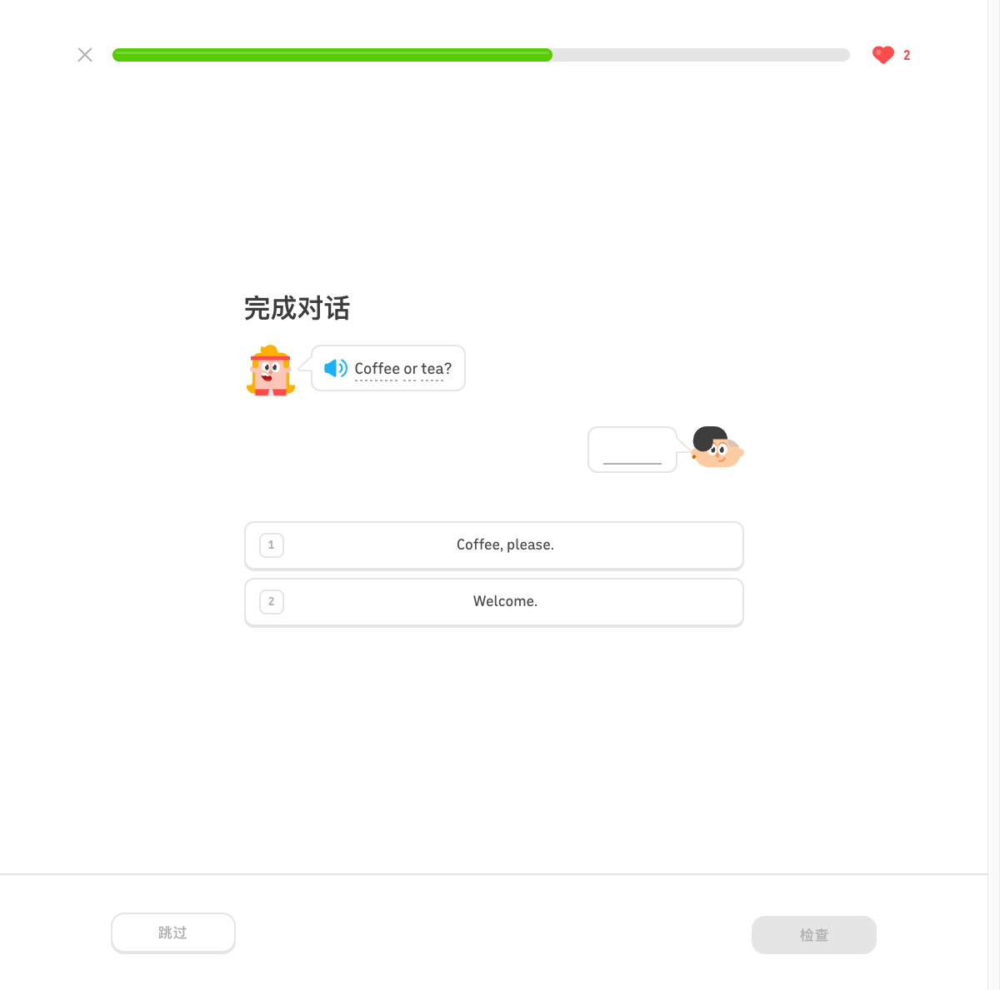
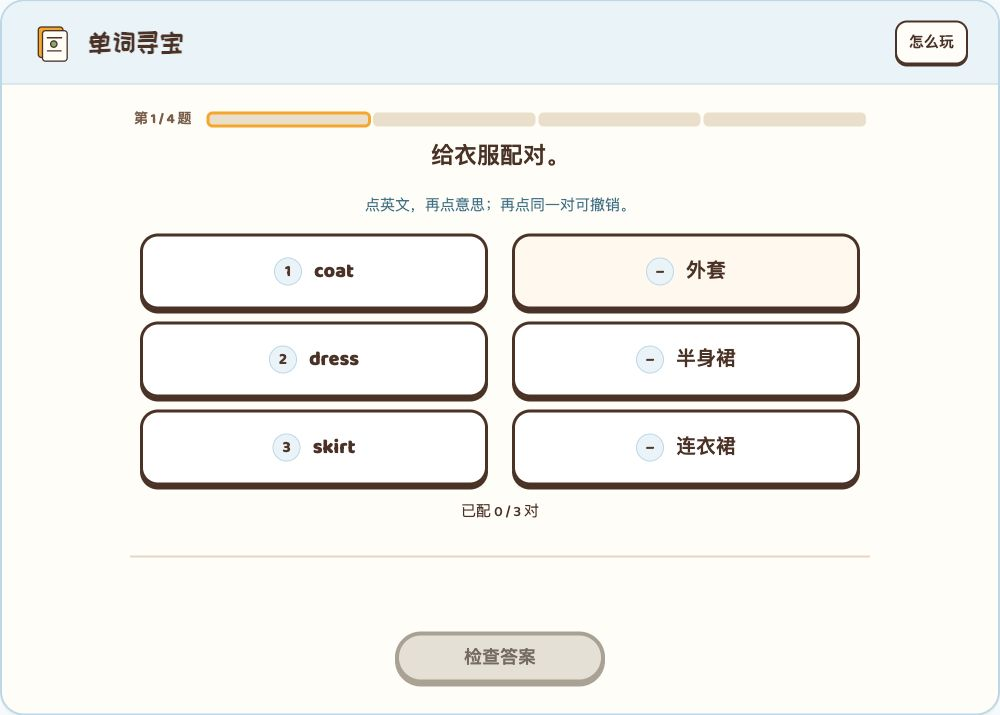
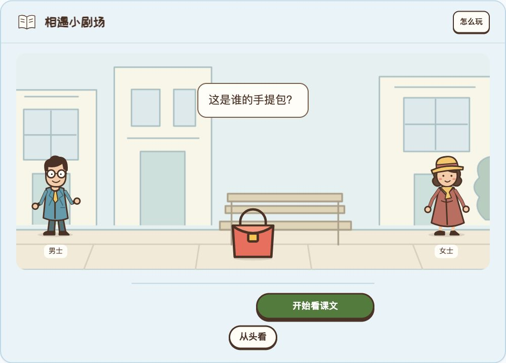
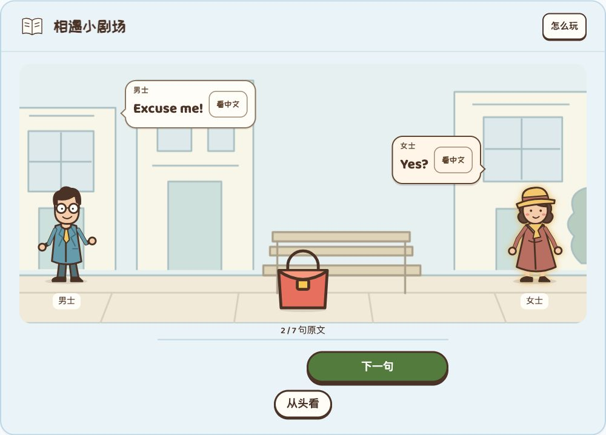
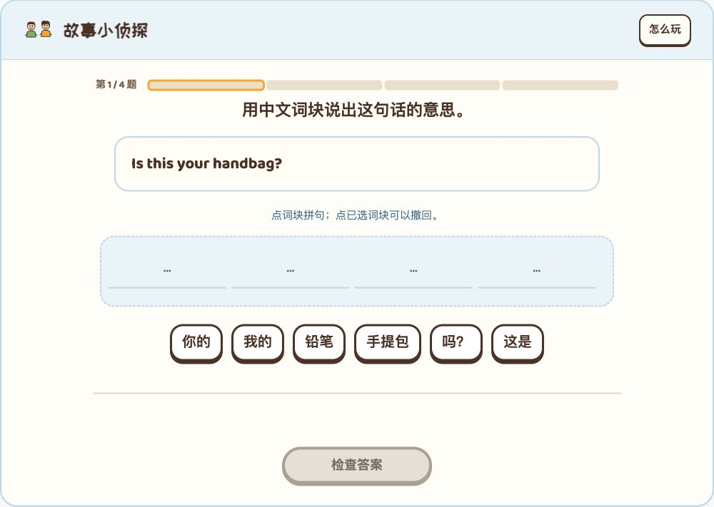
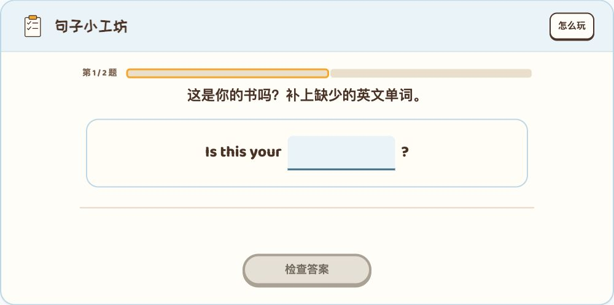
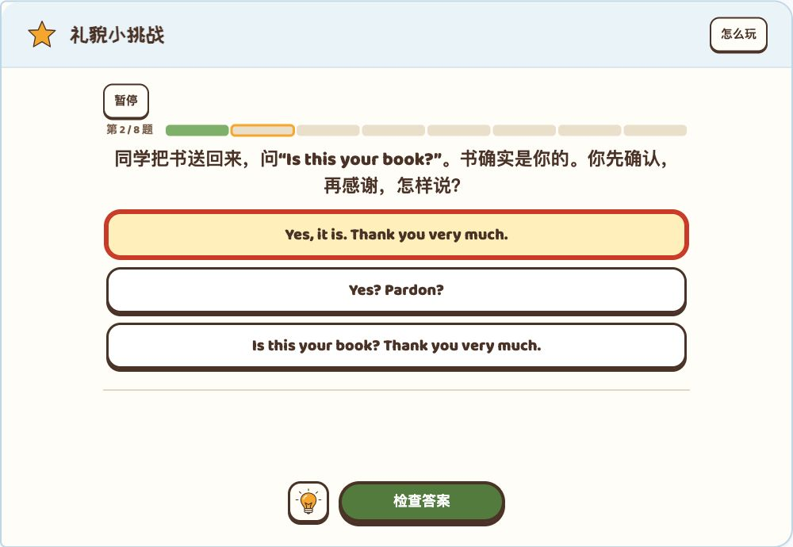
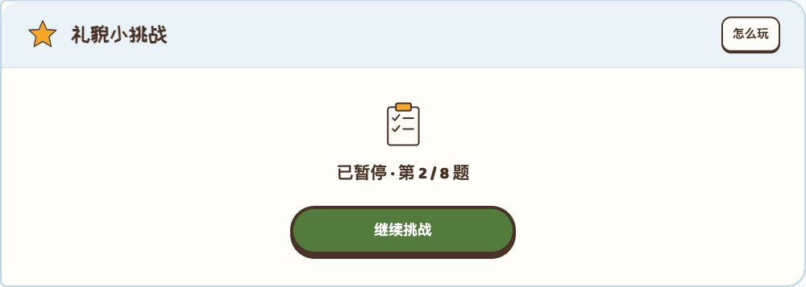

阅读按钮按状态出现
相遇小剧场
这是谁的手提包？
未开始没有“从头看”。阅读时左次右主；改变文本或展开中文不改变操作区位置。示意只演示首句、第二句和完成三种状态。
清单中的问题成立：可见说明偏多、阅读按钮层级有误、输入题超出期望、暂停增加了一个中间页面。建议统一为无配音、全点选、短指令、自动续学，保留必要语境和作答反馈。
依据 问题原稿、原稿两张截图、当前 Lesson 1–2 的五段实际操作，以及统一标准 v1.26。下方为审查证据和改后示意；正式课件尚未应用这些修改。
| 问题 | 建议改法与理由 | 优先级 |
|---|---|---|
| 1 · 单词寻宝 操作明确，文案冗余 | 删除配对操作的常驻说明。建议题干用选择配对；若保留本课语境，可用给衣服配对。不建议“给衣服选择配对”，它更长且把两个动作叠在一起。仍保留选中、配对标记与可撤回的操作状态。 | 随后统一 |
| 2 · 课文阅读 布局缺陷 | 未开始只显示居中的“开始看课文”；阅读中“从头看”在左、“下一句”在右，同行且位置固定；完成后“再看一遍”在左、“下一站”在右。进度显示 2 / 7，读屏名称保留“课文进度，第 2 句，共 7 句”。 | 优先修复 |
| 3 · 故事小侦探 指令重复 | 改为翻译这句话，删除“点词块拼句……”说明。英文原句、中文词块、空位本身已表达任务；继续保留点击撤回和键盘焦点。 | 随后统一 |
| 4 · 句子小工坊 交互范围不符 | 移除作答中的单词输入。Lesson 1–2 的 book、Lesson 25–26 的 clean 改为点选补空；题目数量可保持 25／27，但不再记为 E07。证书姓名等必要表单输入不属于练习题，不一并删除。 | 优先调整 |
| 5a · 挑战暂停 多余的中间状态 | 移除“暂停”和暂停页，继续自动保存。现在点击暂停只是把题面替换成“已暂停／继续挑战”，未见需要暂停的计时机制；本轮还验证了不点击暂停，刷新仍恢复未提交选择。 | 随后统一 |
| 5b · 怎么玩 各站重复入口 | 移除两套课件各站的“怎么玩”按钮与对应玩法弹层。保留教学内容中的“看中文”、表达示范，以及有实际帮助的“给点线索”；三者不是同一种功能。不另加默认弹出的教程。 | 随后统一 |
| 5c · 综合对话长题干 中文阅读负担偏高 | 拆为短指令、必要情境、英文对白、选项。本题用“先确认，再道谢”，另用一行说明“同学递回你的书”，再单独呈现 Is this your book?。保留“书是你的”和“确认＋感谢”两个判断条件。 | 优先调整 |
| 全单元的小标题标点 | 活动名、按钮、短指令去掉末尾句号；英文教材原句、问号和必要的语义标点保留。不要对所有题干和英文原文做全局标点删除。 | 随后统一 |
复用当前人物、场景、色板和按钮。这里的状态演示不计入课程进度。
未开始没有“从头看”。阅读时左次右主；改变文本或展开中文不改变操作区位置。示意只演示首句、第二句和完成三种状态。
下方可以选择、检查和重试，演示短题干如何保持原考点。
同学递回你的书
两个干扰项分别缺少“感谢”和“确认”。已知归属与双重目标仍在题面；答错只重试，不提前填入正确回应。人物沿用现有素材，仅示意布局，正式题面需匹配同学身份。
仓库中文实测 E12 的具体题面是“完成对话”，接着呈现 Coffee or tea?、待回答的气泡以及 Coffee, please.／Welcome. 两项。操作指令、英语话轮、答案各占一层，没有把整段情境说明塞进标题。查看已有研究。
Duolingo 的官方沉浸式练习说明也以补句、补对话、阅读理解为例，并说明可由图片和周边文字提供情境线索。这里借鉴的是呈现方式，不声称当前所有 Duolingo 课程都使用同一套布局；本轮没有重新登录 Duolingo 实测。

本课是中文儿童的入门单元，必要的中文归属条件仍应保留。题干缩短不等于省略答题依据；也不跟随该实测样例采用错后展示答案的机制。
在独立的本地审查入口操作，没有重置用户体验页的学习记录。以下截图均由本轮实际页面保存；原稿的两张截图也已核对。
三组点选和配对计数清楚。主要问题是题干下方又解释同一操作，右上角还重复提供“怎么玩”。建议删文案，保留编号／选中状态，不仅靠颜色区分配对。

阅读中两按钮实测纵坐标为 391／455 像素，并非同行。根因在 core/unit-theme.css:79–82：主按钮固定在右列，唯一的次按钮同时命中 first-child 与 last-child，后者把它排到第二行。Lesson 25–26 已有 only-child 修正规则，Lesson 1–2 尚无对应处理。初始状态还同时提供“开始”和无实际需要的“从头看”。


标题与下方说明都在解释中文词块的操作。空位、词块和检查按钮足以承载常规流程；删可见说明时，词块的可访问名称与撤回焦点仍要保留。

这是 E07 的单词输入实现，不是点选题；手机会进入系统输入法流程。本轮未检验实体手机键盘遮挡，因此不把遮挡当作已证实故障。应依据用户的交互范围调整题型。

对话题把人物、归属、操作目标和英文问句合并为一个长标题。暂停则把题面替换为继续按钮。已通过真实操作确认：选择一项后直接刷新，不经过暂停，选择仍保留。因此删除暂停入口可以保留续学能力。


验收边界：这次完成问题审查和方案示意，没有实施课程修改，也未重跑整套产品回归。截图与操作支持上述局部结论，不代表全站可访问性合规或儿童教学效果已验证。
新增：本审查、当前页面证据和可交互方案示意。待完成：正式实现与修改后的验收。提交、推送、发布均未执行。